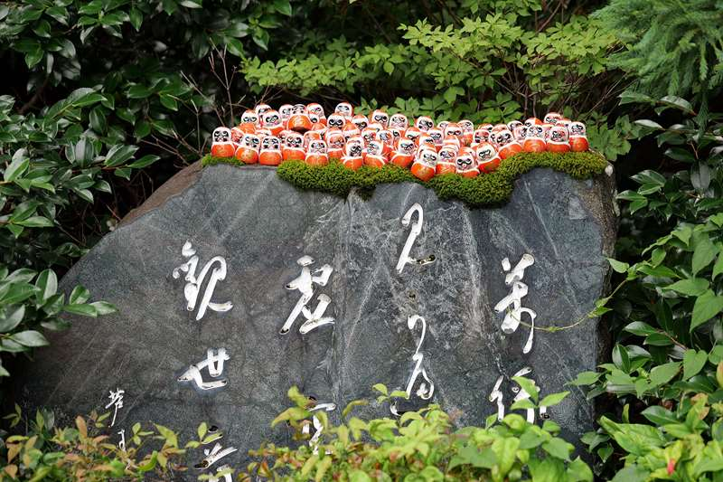
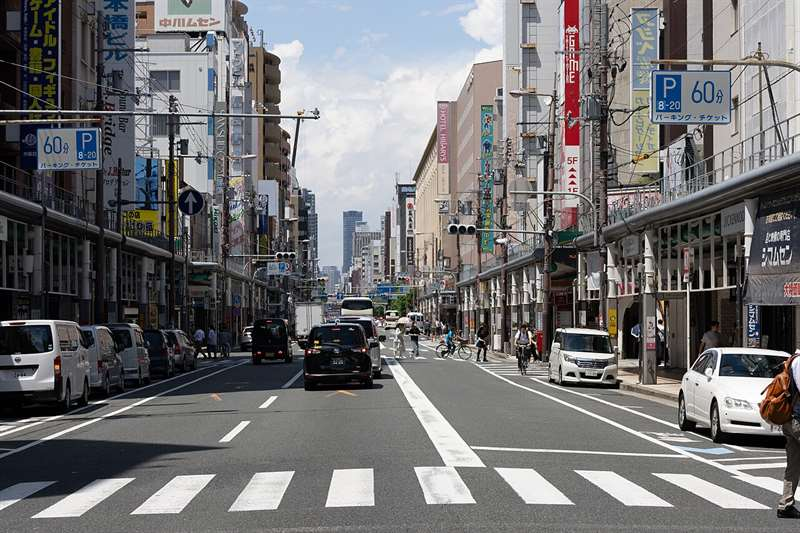
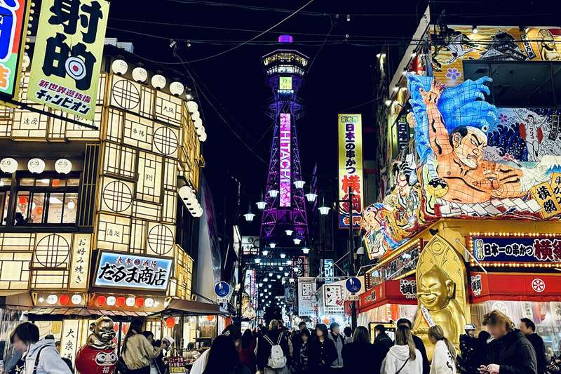
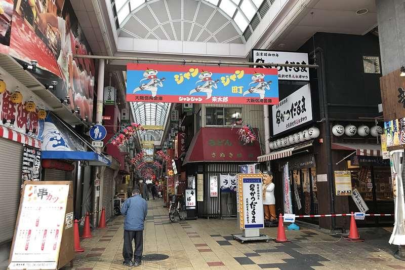
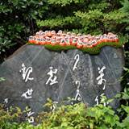
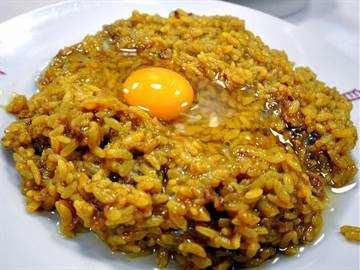
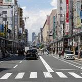
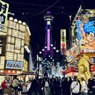
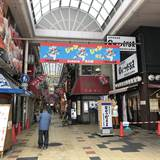
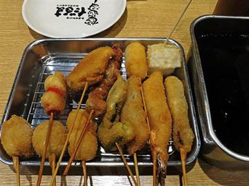

Giorno 6 di 15 · Martedì 8 dicembre · Osaka
Osaka #2: i daruma di Katsuo-ji, Den Den Town e Shinsekai




In sintesi
- Mattina sulle colline di Minoh, a Katsuo-ji, il tempio dei daruma.
- Pomeriggio il curry storico di Jiyuken e quattro ore a Den Den Town.
- Sera Shinsekai al neon e il kushikatsu da Daruma alle sette.
Itinerario
- 07:15Colazione da Matsuya, accanto all'hotel (vedi sotto): oggi si esce presto, perché il tempio sta sulle colline a nord di Osaka.
- 08:00Kyoto → Minoh — Hankyu da Omiya col semi-limited express (準特急: il limited express a Omiya non ferma) fino a Osaka-Umeda, ~45 minuti e 410 yen, poi la metro Midosuji verso nord fino al capolinea Minoh-Kayano, 26 minuti e 480 yen: guardate che il treno vada fino in fondo, perché alcuni si fermano prima, a Senri-Chuo o Shin-Osaka. Tutto con la ICOCA.
- 09:30Bus per Katsuo-ji — dal capolinea, banchina 6, il Hankyu Bus 30 (特急30, 勝尾寺行): 22 minuti in salita, 800 yen. Su questo bus i contanti non si accettano (dal 1° ottobre 2026): si paga con la ICOCA o con la carta. Nei feriali parte alle 9:00, 9:30, 10:00 e poi ogni mezz'ora.
- 09:55Katsuo-ji, il tempio dei daruma la cosa strana della giornata — un tempio fondato nell'VIII secolo in mezzo al bosco, il cui nome si legge "vincere": da secoli ci si viene a chiedere la vittoria, in un esame, in una causa, in una partita. Chi la ottiene riporta qui il suo daruma, la bambolina rossa portafortuna senza braccia né gambe, e il risultato è che ce ne sono migliaia ovunque: in fila sui muretti, sulle rocce, sui gradini, sui tetti delle lanterne di pietra, sotto gli alberi. Il gioco è comprarne uno piccolo al tempio, scriverci sotto un desiderio e dipingergli un occhio; il secondo si dipinge quando il desiderio si avvera. Ingresso 500 yen, aperto dalle 8:00. Si sale parecchio, a gradini, quindi scarpe comode. A inizio dicembre gli aceri sono a fine stagione: qualche rosso resta, ma non è il motivo per venirci.
- 11:20Bus per Minoh-Kayano e metro per Namba — il primo bus di ritorno nei feriali è alle 11:20, il successivo alle 11:50. Al capolinea si riprende la Midosuji verso sud e senza cambiare si arriva a Namba: in tutto un'ora, verso le 12:20.
- 12:30Pranzo: il curry del 1910 — da Jiyuken, a due minuti dall'uscita 11 di Namba, il primo ristorante di cucina occidentale di Osaka (vedi sotto).
- 13:30Den Den Town (Nipponbashi) il tempo largo della giornata — dieci minuti a piedi da Namba verso est. È l'Akihabara di Osaka: elettronica, retrogaming, modellismo, manga usati. Meno luccicante e molto meno battuta dai turisti, il che di solito vuol dire prezzi migliori sull'usato. A quest'ora è aperto tutto, e i negozi chiudono fra le 20 e le 21: avete più di quattro ore, senza orologio.
- 13:30Surugaya, Super Potato, Jungle e Animate — usato e nuovo su più piani: figure, dojinshi, carte, giochi. Super Potato sulla Ota Road (スーパーポテト オタロード店) ha cartucce Famicom e Super Famicom sciolte, console testate e accessori, e qui il retrogaming costa meno che ad Akihabara perché non c'è la stessa pressione turistica. Surugaya ha spesso i bin con la roba senza scatola a poche centinaia di yen.
- 15:00Mandarake Grand Chaos (まんだらけグランドカオス) — Nipponbashi 4-12-6, sul lato ovest di Sakaisuji: dal 2020 non è più ad Amerikamura ma qui, ed è il grande usato di Osaka — manga, figure, giochi — su più piani, 12:00-20:00.
- 16:15Ota Road e il giro finale — si torna nei negozi dove avete lasciato qualcosa in sospeso, con i prezzi già in testa, e si allarga alle traverse: Ota Road, la via parallela verso ovest, è quella dei negozi di figure e delle vetrine a noleggio, cassette di plexiglass dove i privati vendono la loro roba a prezzo fisso. Un negozio di usato può mangiarsi due ore, ed è esattamente quello che deve succedere.
- 18:00Shinsekai — quindici minuti a piedi verso sud da Nipponbashi, ed è già buio: il momento in cui il quartiere rende di più. Costruito nel 1912 immaginando la Parigi e la Coney Island del futuro, poi rimasto congelato negli anni '60. Insegne enormi, pesci gonfiabili, statue di Billiken. È il posto più "vecchia Osaka" che vedrete.
- 18:15Tsutenkaku, da sotto — 108 metri, e non ci salite: di viste dall'alto ne fate due in tutto il viaggio e sono Umeda sabato e Shibuya a Tokyo. La torre serve da qui in basso, in fondo al corridoio di insegne — è la cosa che tiene insieme tutta Shinsekai, e la sera la cima si accende di luci che cambiano colore. Per strada e nei negozi trovate decine di statue di Billiken, il dio americano della fortuna che a Osaka ha attecchito e in America no: gli si gratta la pianta dei piedi.
- 18:35Janjan Yokocho — il vicolo coperto ai piedi della torre, lungo 180 metri: tavoli di shogi in strada, bar pieni, kushikatsu ovunque, tutto acceso.
- 19:00Cena a Shinsekai — kushikatsu da Daruma, con la Tsutenkaku illuminata sopra la testa (vedi sotto). Il banco è piccolo e alle sette può esserci una fila di venti-trenta minuti: gira in fretta.
- 20:15Rientro — da Dobutsuen-mae la metro fino a Umeda e l'Hankyu fino a Omiya: un'ora e un quarto, in hotel verso le 21:30. Domattina il treno per Himeji parte presto, quindi niente altro dopo cena.
Le tappe su Google Maps

Katsuo-ji (Minoh)
Jiyuken
Den Den Town- Mandarake Grand Chaos

Tsutenkaku
Janjan Yokocho
Kushikatsu Daruma
Toccate una tappa e si apre in Google Maps: da lì Indicazioni vi dice treno e binario partendo da dove siete.
La mappa si carica solo se la toccate, per non consumare dati: il tracciato è a piedi; dove l'itinerario dice treno o metro, prendete quelli. Katsuo-ji è a un'ora da Namba, sulle colline a nord: nella mappa a piedi non c'è, si apre toccando la sua tappa.
Dove mangiare
- ColazioneMatsuya (松屋 四条大宮駅前店), a 150 metri dall'hotel e aperto 24 ore: dalle 5 alle 11 fa le colazioni giapponesi, riso, zuppa di miso, pesce o uovo, per poche centinaia di yen, e il riso grande è gratis. È una catena, ma è un pasto caldo vero in dieci minuti, ed è quello che serve stamattina, con il treno alle 8. L'hotel la colazione non la serve. Inoda Coffee, che era la colazione di oggi, non ci sta più: apre alle 7 e chiede un'ora.
- PranzoJiyuken (自由軒 難波本店), a Namba, dal 1910 — il primo ristorante di cucina occidentale di Osaka. Il piatto è il meibutsu curry: riso e curry già mescolati insieme, con un tuorlo crudo in mezzo e qualche goccia di salsa Worcester sopra, da rompere e girare prima di mangiare. Il mescolare nasce quando non c'erano i cuociriso elettrici e serviva a tenere caldo il riso; il curry ha una base di brodo di tendine di manzo. Costa pochissimo, attorno ai mille yen (prezzi ritoccati a luglio 2026), solo contanti, dalle 11 alle 20 circa, ed era il piatto preferito dello scrittore Oda Sakunosuke. Chiuso il lunedì; oggi è martedì. A due minuti dall'uscita 11 della stazione di Namba.
- CenaKushikatsu Daruma (串かつだるま 新世界総本店) a Shinsekai, la casa madre dal 1929: 11:00-22:30, aperto tutti i giorni, una dozzina di posti al banco, solo contanti, sui 2.500-3.500 yen a testa con una birra. Prendete il set misto e poi aggiungete asparago, maiale e formaggio. La salsa è in comune e non si intinge due volte.
Note e dritte
La logica della giornata: la mattina fuori città, il pomeriggio e la sera su una linea dritta verso sud. Katsuo-ji apre alle 8, mentre a Den Den Town metà dei negozi apre solo fra le 11 e le 12: il tempio si prende le ore in cui i negozi sarebbero stati chiusi. Da Namba in poi Jiyuken, Den Den Town e Shinsekai stanno su un asse di tre chilometri e si fanno interamente a piedi. Osaka sud è il lato popolare e un po' sgangherato della città: rumoroso, ipercalorico, per niente elegante. È il contrario esatto sia di Kyoto sia della Osaka lucida di sabato.
Den Den Town è la vostra prima giornata nerd, e ha il tempo che le serve: un giro solo, lungo, dalle 13:30 alle 17:45, con tutti i negozi già aperti. I prezzi dell'usato qui sono mediamente più bassi di Akihabara, quindi se vedete una cartuccia o una figure che cercate da tempo, prendetela adesso invece di sperare di ritrovarla a Tokyo. Per fare spazio ai daruma sono usciti Shitenno-ji, che era l'alternativa al secondo giro, e Spa World dopo cena: con la cena alle sette e il treno per Himeji la mattina dopo, sarebbe stato tardi. Le regole su come si legge lo stato della merce usata sono nella pagina Shopping.
Niente sushi oggi, e niente Kuromon. Il sushi del viaggio è ridotto a due occasioni buone, Toyosu (Giorno 12) e l'omakase dell'ultimo pranzo (Giorno 15), quindi Osaka si mangia in un altro modo: il curry storico a pranzo e il kushikatsu la sera. Il mercato di Kuromon, a due passi da Den Den Town, resta fuori: è diventato in gran parte una via di spiedini per turisti a prezzi gonfiati, e come mercato "da girare" il posto è già di Nishiki.
Sul kushikatsu, una regola sacra: ogni tavolo ha una vaschetta di salsa in comune, e non si intinge due volte (ni-do zuke kinshi). Se vi serve più salsa, usate un cavolo crudo come cucchiaio. È l'unica regola di galateo che a Osaka prendono davvero sul serio.
Se oggi non gira. Si taglia il tempio, non Den Den Town La valvola è la mattina. Se alle 7 siete cotti, Katsuo-ji salta: dormite, colazione con calma, Hankyu verso le 9:30 e Den Den Town dalle 11, con il pranzo da Jiyuken in mezzo. Se invece è il pomeriggio a non girare, Den Den Town si riduce ai negozi che vi interessano davvero e a Shinsekai ci si arriva prima. Attenzione al bus del tempio: il primo ritorno è alle 11:20 e il successivo alle 11:50, e Jiyuken chiude verso le 20, quindi anche col bus dopo il pranzo resta. La cena da Daruma alle 19:00 resta: non si prenota. Sappiate cosa ci lasciate: a Osaka non tornate, e l'usato di Den Den Town lo ritrovate a Tokyo (Akihabara ai Giorni 9 e 11, Nakano al 12), a prezzi più alti. Niente di oggi è a data fissa o prenotato.